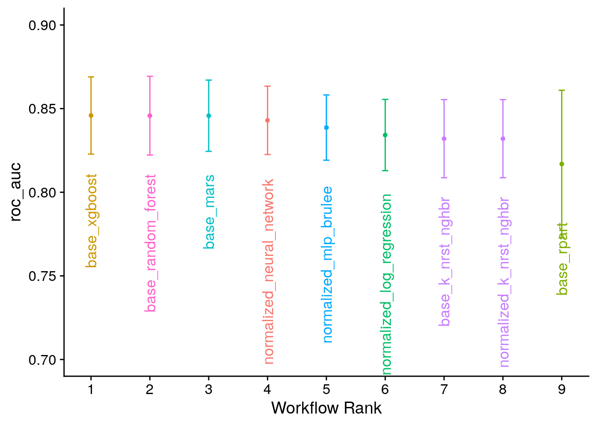
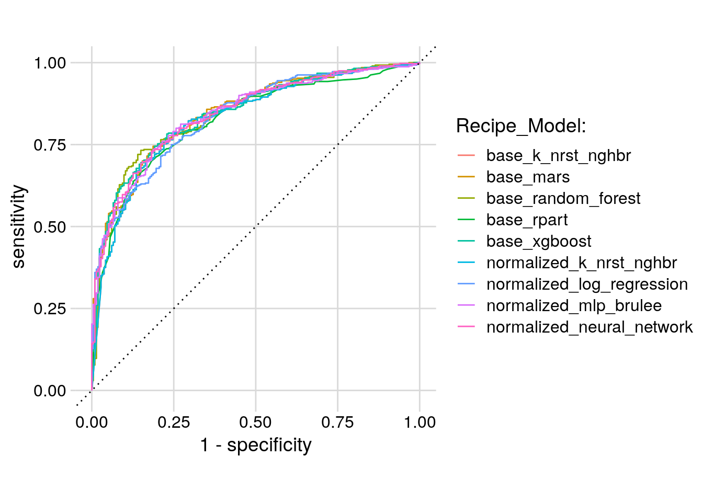
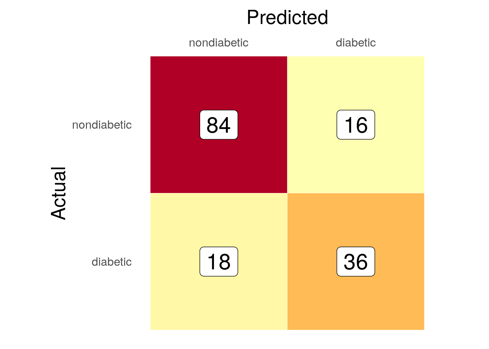

Pima Indians Diabetes
1 Introduction
This project involves reproducible research with Docker [1]. The Pima Indians Diabetes Dataset is a well-known collection of health information frequently used by students and professionals learning data science and machine learning; you’ll often find it used in examples on websites like Kaggle.
It originally came from a major health study conducted by the National Institute of Diabetes and Digestive and Kidney Diseases (NIDDK). The data focuses specifically on women, aged 21 and older, who are of Pima heritage and lived near Phoenix, Arizona. The main goal when using this dataset is typically to predict whether a person has diabetes (a ‘yes’ or ‘no’ outcome) based on several common medical measurements recorded for each individual.
These measurements include the number of times pregnant, blood glucose levels, blood pressure, body mass index (BMI), insulin levels, age, and a diabetes pedigree function score which relates to family history. This dataset is popular for practice because it’s easily available and contains realistic challenges found in real-world data.
One particular challenge it’s famous for is the presence of zero values in columns where that’s biologically impossible, like blood pressure, skin thickness, or BMI. This requires data scientists to figure out how to handle these seemingly incorrect or missing values before building predictive models.
2 Workflow
The workflow proceeds according to the chart below.
3 Raw
3.1 File Info
| attributes | value |
|---|---|
| size | 23105 |
| isdir | FALSE |
| mode | 644 |
| mtime | 2025-05-21 18:47:17 |
| ctime | 2025-05-21 18:47:17 |
| atime | 2025-05-21 18:47:17 |
| uid | 0 |
| gid | 0 |
| uname | root |
| grname | root |
4 Recoded Data
One of the problems with the Pima Indians Diabetes dataset is that a number of observations are coded as zero when they should have been coded “NA”. For example, a persons blood_pressure was coded as 0 when that’s physically impossible to participate and have no blood pressure.
4.1 Summary
Normal
| vars | mean | sd | median | trimmed | mad | min | max | range | |
|---|---|---|---|---|---|---|---|---|---|
| pregnancies | 1 | 3.30 | 3.02 | 2.00 | 2.88 | 2.97 | 0.00 | 13.00 | 13.00 |
| glucose | 2 | 110.64 | 24.78 | 107.00 | 109.09 | 23.72 | 44.00 | 197.00 | 153.00 |
| blood_pressure | 3 | 70.88 | 12.16 | 70.00 | 70.71 | 11.86 | 24.00 | 122.00 | 98.00 |
| skin_thickness | 4 | 27.24 | 10.03 | 27.00 | 26.86 | 10.38 | 7.00 | 60.00 | 53.00 |
| insulin | 5 | 130.29 | 102.48 | 102.50 | 112.27 | 63.01 | 15.00 | 744.00 | 729.00 |
| bmi | 6 | 30.86 | 6.56 | 30.10 | 30.55 | 7.12 | 18.20 | 57.30 | 39.10 |
| dbf | 7 | 0.43 | 0.30 | 0.34 | 0.38 | 0.22 | 0.08 | 2.33 | 2.25 |
| age | 8 | 31.19 | 11.67 | 27.00 | 28.98 | 7.41 | 21.00 | 81.00 | 60.00 |
| outcome | 9 | 0.00 | 0.00 | 0.00 | 0.00 | 0.00 | 0.00 | 0.00 | 0.00 |
Diabetic
| vars | mean | sd | median | trimmed | mad | min | max | range | |
|---|---|---|---|---|---|---|---|---|---|
| pregnancies | 1 | 4.87 | 3.74 | 4.00 | 4.60 | 4.45 | 0.00 | 17.00 | 17.00 |
| glucose | 2 | 142.32 | 29.60 | 140.00 | 142.04 | 34.84 | 78.00 | 199.00 | 121.00 |
| blood_pressure | 3 | 75.32 | 12.30 | 74.50 | 75.22 | 11.12 | 30.00 | 114.00 | 84.00 |
| skin_thickness | 4 | 33.00 | 10.33 | 32.00 | 32.74 | 8.90 | 7.00 | 99.00 | 92.00 |
| insulin | 5 | 206.85 | 132.70 | 169.50 | 184.28 | 74.87 | 14.00 | 846.00 | 832.00 |
| bmi | 6 | 35.41 | 6.61 | 34.30 | 34.91 | 5.71 | 22.90 | 67.10 | 44.20 |
| dbf | 7 | 0.55 | 0.37 | 0.45 | 0.50 | 0.31 | 0.09 | 2.42 | 2.33 |
| age | 8 | 37.07 | 10.97 | 36.00 | 36.28 | 11.86 | 21.00 | 70.00 | 49.00 |
| outcome | 9 | 1.00 | 0.00 | 1.00 | 1.00 | 0.00 | 1.00 | 1.00 | 0.00 |
4.2 Outliers
4.3 Missing

5 Imputed Data
Any outliers beyond three standard deviations from the mean are set to NA. With the values that were improperly coded and the outliers set to NA, there were a total number of XXX NAs.
5.1 Summary
Normal
| vars | mean | sd | median | trimmed | mad | min | max | range | |
|---|---|---|---|---|---|---|---|---|---|
| pregnancies | 1 | 4.73 | 3.55 | 4.00 | 4.52 | 4.45 | 0.00 | 13.00 | 13.00 |
| glucose | 2 | 142.21 | 29.60 | 140.00 | 141.92 | 34.84 | 78.00 | 199.00 | 121.00 |
| blood_pressure | 3 | 75.23 | 11.79 | 74.50 | 75.23 | 11.12 | 40.00 | 108.00 | 68.00 |
| skin_thickness | 4 | 31.62 | 8.86 | 32.00 | 31.76 | 8.90 | 7.00 | 56.00 | 49.00 |
| insulin | 5 | 197.44 | 112.11 | 173.00 | 183.91 | 86.73 | 14.00 | 510.00 | 496.00 |
| bmi | 6 | 35.12 | 6.03 | 34.20 | 34.80 | 5.63 | 22.90 | 53.20 | 30.30 |
| dbf | 7 | 0.53 | 0.31 | 0.44 | 0.49 | 0.30 | 0.09 | 1.39 | 1.31 |
| age | 8 | 36.93 | 10.78 | 36.00 | 36.19 | 11.86 | 21.00 | 67.00 | 46.00 |
| outcome* | 9 | 2.00 | 0.00 | 2.00 | 2.00 | 0.00 | 2.00 | 2.00 | 0.00 |
Diabetic
| vars | mean | sd | median | trimmed | mad | min | max | range | |
|---|---|---|---|---|---|---|---|---|---|
| pregnancies | 1 | 3.30 | 3.02 | 2.00 | 2.88 | 2.97 | 0.00 | 13.00 | 13.00 |
| glucose | 2 | 110.58 | 24.72 | 107.00 | 109.00 | 23.72 | 44.00 | 197.00 | 153.00 |
| blood_pressure | 3 | 70.75 | 11.42 | 70.00 | 70.58 | 11.86 | 38.00 | 108.00 | 70.00 |
| skin_thickness | 4 | 26.84 | 9.91 | 27.00 | 26.38 | 10.38 | 7.00 | 60.00 | 53.00 |
| insulin | 5 | 119.50 | 78.85 | 100.00 | 107.70 | 59.30 | 15.00 | 510.00 | 495.00 |
| bmi | 6 | 30.84 | 6.44 | 30.30 | 30.58 | 7.12 | 18.20 | 52.30 | 34.10 |
| dbf | 7 | 0.41 | 0.25 | 0.33 | 0.38 | 0.21 | 0.08 | 1.46 | 1.38 |
| age | 8 | 30.91 | 11.08 | 27.00 | 28.89 | 7.41 | 21.00 | 68.00 | 47.00 |
| outcome* | 9 | 1.00 | 0.00 | 1.00 | 1.00 | 0.00 | 1.00 | 1.00 | 0.00 |
5.2 Outliers
5.3 Correlogram

5.4 Missing

6 Models
6.1 KNN
The K-Nearest Neighbors (KNN) algorithm is a foundational and intuitive method in supervised machine learning, applicable to both classification and regression problems, with roots tracing back to non-parametric statistics work by Fix and Hodges in 1951 and formal analysis by Cover and Hart in 1967. Its core theory rests on the simple idea that similar data points exist in close proximity in the feature space. KNN is considered an instance-based, or “lazy,” learning algorithm because it doesn’t build an explicit model during training; instead, it memorizes the entire labeled training dataset. When predicting an outcome for a new, unseen data point, the algorithm identifies the ‘K’ closest data points (the “nearest neighbors”) from the training set based on a chosen distance metric, typically Euclidean distance. For classification, the prediction is the most frequent class label among these K neighbors (majority vote), while for regression, the prediction is usually the average or median of the neighbors’ values. The performance of KNN hinges critically on the choice of ‘K’ (balancing bias and variance), the selection of an appropriate distance metric, and often requires feature scaling, as distance calculations are sensitive to the range and units of the input variables.
6.2 Logistic Regression
Logistic regression is a fundamental statistical method and supervised learning algorithm primarily used for binary classification problems, aiming to predict the probability of an observation belonging to one of two outcomes (e.g., yes/no, pass/fail). Developed significantly by statistician David Cox in the mid-20th century, it’s widely applied across various fields. Unlike linear regression, it models the probability (p) of the default class (typically ‘1’) using the logistic function (also known as the sigmoid function):
\[ p = \frac{1}{1 + \exp(-z)} \]
This S-shaped function takes an input z, which is a linear combination of the predictor variables , and transforms it into a probability value between 0 and 1. The linear combination input (z) actually represents the log-odds (or logit) of the event occurring. This means logistic regression models the log-odds as a linear function of the predictors:
\[ \log\left(\frac{p}{1-p}\right) = z = \beta_0 + \beta_1x_1 + \dots + \beta_nx_n \]
As a parametric model, logistic regression learns the coefficients \[(β i)\] from the training data, typically through an iterative optimization process called Maximum Likelihood Estimation (MLE). The final output probability (p) is then usually converted into a class prediction by applying a threshold (commonly 0.5).
6.3 MARS
Multivariate Adaptive Regression Splines (MARS) is a non-parametric regression technique adept at modeling complex, non-linear relationships between predictor variables and a response variable. The algorithm operates through a two-stage process: a forward pass that iteratively adds piecewise linear basis functions (hinge functions) to capture non-linearities and interactions. At the heart of most MARS algorithms is the model’s predictive equation, which takes the general form:
\[\hat{f}(x)=β0 +m=1∑M βm Bm (x)\]
where \(\hat{f}(x)\) is the predicted response, \(β0\) is the intercept, \(Bm (x)\) are the basis functions (often hinge functions or products thereof), and \(βm\) are their coefficients, determined through a process that typically leads to an initially overfit model. Subsequently, a backward pruning pass systematically removes less contributory terms, typically using Generalized Cross-Validation, to enhance model generalization and select the final set of M basis functions. This adaptive approach allows MARS to automatically identify important variables and their interactions, offering a flexible alternative to traditional linear models.
7 Results
7.1 Optimal Tuning Parameters
| mtry | trees | tree_depth | learn_rate | loss_reduction | sample_size | .config |
|---|---|---|---|---|---|---|
| 5 | 1750 | 2 | 0.004217 | 1e-07 | 0.2875 | Preprocessor1_Model14 |
7.2 Model Results

7.3 Receiver Operator Curve
The Receiver Operating Characteristic (ROC) curve is a fundamental tool in machine learning and statistics for evaluating the performance of binary classification models. Originating from signal detection theory developed during World War II to analyze radar signals, the ROC curve graphically illustrates a classifier’s diagnostic ability across all possible classification thresholds. It plots the True Positive Rate (TPR), also known as sensitivity or recall (the proportion of actual positives correctly identified), on the Y-axis against the False Positive Rate (FPR), which is equal to 1 minus specificity (the proportion of actual negatives incorrectly identified as positive), on the X-axis. Each point on the curve corresponds to a specific threshold used to convert the model’s continuous output (like a probability score) into a binary decision (0 or 1); varying this threshold traces the curve. A model with better discriminative power will have a curve that bows towards the top-left corner (representing 100% TPR and 0% FPR), while a model performing no better than random chance lies along the diagonal line (TPR = FPR). The overall performance across all thresholds is commonly summarized by the Area Under the Curve (AUC or AUROC), a value ranging from 0.5 (random chance) to 1.0 (perfect classification), representing the probability that the model ranks a randomly chosen positive instance higher than a randomly chosen negative one.
7.4 Model ROC Curves

7.5 Models Ranked
| rank | wflow_id | .config | .metric | mean |
|---|---|---|---|---|
| 1 | base_xgboost | Preprocessor1_Model14 | roc_auc | 0.8458820 |
| 2 | base_random_forest | Preprocessor1_Model19 | roc_auc | 0.8457684 |
| 3 | base_mars | Preprocessor1_Model19 | roc_auc | 0.8457522 |
| 4 | normalized_neural_network | Preprocessor1_Model09 | roc_auc | 0.8429870 |
| 5 | normalized_mlp_brulee | Preprocessor1_Model18 | roc_auc | 0.8386580 |
| 6 | normalized_log_regression | Preprocessor1_Model18 | roc_auc | 0.8341937 |
| 7 | base_k_nrst_nghbr | Preprocessor1_Model11 | roc_auc | 0.8320292 |
| 8 | normalized_k_nrst_nghbr | Preprocessor1_Model11 | roc_auc | 0.8320292 |
| 9 | base_rpart | Preprocessor1_Model14 | roc_auc | 0.8168669 |
7.6 Best Tuning Parameters
base_xgboost
| mtry | trees | tree_depth | learn_rate | loss_reduction | sample_size | .config |
|---|---|---|---|---|---|---|
| 5 | 1750 | 2 | 0.004217 | 1e-07 | 0.2875 | Preprocessor1_Model14 |
7.7 Confusion Matrix
base_xgboost

8 Conclusion
The purpose of this report was to create a reproducible pipeline such that it could be recreated. However, one note is that the results from the ML models were poor: the false negatives are way too high, in my opinion. In the real world, a number of people would have been told that they did not have diabetes when they in fact did. This would have to be addressed in the future modeling and hopefully the overall accuracy, both for the positives and negatives, would increase.
Report generated at 2025-05-21 19:13:54.801701
Appendix - Raw Data
| pregnancies | glucose | blood_pressure | skin_thickness | insulin | bmi | dbf | age | outcome |
|---|---|---|---|---|---|---|---|---|
| 6 | 148 | 72 | 35 | 0 | 33.6 | 0.627 | 50 | 1 |
| 1 | 85 | 66 | 29 | 0 | 26.6 | 0.351 | 31 | 0 |
| 8 | 183 | 64 | 0 | 0 | 23.3 | 0.672 | 32 | 1 |
| 1 | 89 | 66 | 23 | 94 | 28.1 | 0.167 | 21 | 0 |
| 0 | 137 | 40 | 35 | 168 | 43.1 | 2.288 | 33 | 1 |
| 5 | 116 | 74 | 0 | 0 | 25.6 | 0.201 | 30 | 0 |
| 3 | 78 | 50 | 32 | 88 | 31.0 | 0.248 | 26 | 1 |
| 10 | 115 | 0 | 0 | 0 | 35.3 | 0.134 | 29 | 0 |
| 2 | 197 | 70 | 45 | 543 | 30.5 | 0.158 | 53 | 1 |
| 8 | 125 | 96 | 0 | 0 | 0.0 | 0.232 | 54 | 1 |
Appendix - Benchmarks
Altair Rapid Miner was used to double check both algorithm selection and performance. All algorithms performed worse than the tuned models above and there were no outstanding performers either.
| Model | AUC | Standard Deviation | Gains | Total Time | Training Time (1,000 Rows) | Scoring Time (1,000 Rows) |
|---|---|---|---|---|---|---|
| Generalized Linear Model | 0.663 | 0.120 | 6 | 1045 | 50.781 | 22.801 |
| Deep Learning | 0.660 | 0.095 | 0 | 2160 | 248.698 | 26.059 |
| Naive Bayes | 0.658 | 0.120 | 0 | 1797 | 31.250 | 94.463 |
| Random Forest | 0.646 | 0.152 | -6 | 4980 | 15.625 | 91.205 |
| Decision Tree | 0.643 | 0.068 | 0 | 1023 | 14.323 | 16.287 |
| Support Vector Machine | 0.595 | 0.075 | 0 | 4084 | 66.406 | 91.205 |
| Gradient Boosted Trees | 0.591 | 0.129 | 0 | 7558 | 169.271 | 45.603 |
| Fast Large Margin | 0.489 | 0.114 | 0 | 1269 | 33.854 | 22.801 |
| Logistic Regression | 0.343 | 0.094 | 0 | 1052 | 54.688 | 22.801 |
References
[1]
D. Nüst, D. Eddelbuettel, D. Bennett, R. Cannoodt, D. Clark, G. Daróczi, M. Edmondson, C. Fay, E. Hughes, L. Kjeldgaard, S. Lopp, B. Marwick, H. Nolis, J. Nolis, H. Ooi, K. Ram, N. Ross, L. Shepherd, P. Sólymos, T. L. Swetnam, N. Turaga, C. V. Petegem, J. Williams, C. Willis, and N. Xiao, “The Rockerverse: Packages and Applications for Containerisation with R,” The R Journal, vol. 12, no. 1, pp. 437–461, Sep. 2020 [Online]. Available: https://rjournal.github.io/. [Accessed: 29-Apr-2025]
[2]
H. Naz and S. Ahuja, “Deep learning approach for diabetes prediction using PIMA Indian dataset,” Journal of Diabetes and Metabolic Disorders, vol. 19, no. 1, pp. 391–403, Apr. 2020 [Online]. Available: https://www.ncbi.nlm.nih.gov/pmc/articles/PMC7270283/. [Accessed: 10-May-2025]
[3]
D. Nüst, V. Sochat, B. Marwick, S. J. Eglen, T. Head, T. Hirst, and B. D. Evans, “Ten simple rules for writing Dockerfiles for reproducible data science,” PLOS Computational Biology, vol. 16, no. 11, p. e1008316, Nov. 2020 [Online]. Available: https://journals.plos.org/ploscompbiol/article?id=10.1371/journal.pcbi.1008316. [Accessed: 21-Apr-2025]
[4]
J. Ostblom and T. Timbers, “Opinionated practices for teaching reproducibility: Motivation, guided instruction and practice,” arXiv:2109.13656 [cs, stat], Sep. 2021 [Online]. Available: http://arxiv.org/abs/2109.13656. [Accessed: 25-Oct-2021]
[5]
C. Pérignon, O. Akmansoy, C. Hurlin, A. Dreber, F. Holzmeister, J. Huber, M. Johannesson, M. Kirchler, A. J. Menkveld, M. Razen, and U. Weitzel, “Computational Reproducibility in Finance: Evidence from 1,000 Tests,” The Review of Financial Studies, vol. 37, no. 11, pp. 3558–3593, Nov. 2024 [Online]. Available: https://doi.org/10.1093/rfs/hhae029. [Accessed: 10-May-2025]
Packages
[1]
K. Müller, Here: A simpler way to find your files. 2020 [Online]. Available: https://CRAN.R-project.org/package=here
[2]
N. Tierney and D. Cook, “Expanding tidy data principles to facilitate missing data exploration, visualization and assessment of imputations,” Journal of Statistical Software, vol. 105, no. 7, pp. 1–31, 2023.
[3]
W. M. Landau, “The targets r package: A dynamic make-like function-oriented pipeline toolkit for reproducibility and high-performance computing,” Journal of Open Source Software, vol. 6, no. 57, p. 2959, 2021 [Online]. Available: https://doi.org/10.21105/joss.02959
[4]
M. Kuhn and S. Couch, Workflowsets: Create a collection of ’tidymodels’ workflows. 2024 [Online]. Available: https://CRAN.R-project.org/package=workflowsets
[5]
H. Wickham, R. François, L. Henry, K. Müller, and D. Vaughan, Dplyr: A grammar of data manipulation. 2023 [Online]. Available: https://CRAN.R-project.org/package=dplyr
[6]
H. Wickham, ggplot2: Elegant graphics for data analysis. Springer-Verlag New York, 2016 [Online]. Available: https://ggplot2.tidyverse.org
[7]
H. Zhu, kableExtra: Construct complex table with ’kable’ and pipe syntax. 2024 [Online]. Available: https://CRAN.R-project.org/package=kableExtra
[8]
T. Ching, Qs: Quick serialization of r objects. 2025 [Online]. Available: https://CRAN.R-project.org/package=qs
[9]
J. Allaire and C. Dervieux, Quarto: R interface to ’quarto’ markdown publishing system. 2024 [Online]. Available: https://CRAN.R-project.org/package=quarto
[10]
W. M. Landau, Tarchetypes: Archetypes for targets. 2021.
[11]
Almende B.V. and Contributors and B. Thieurmel, visNetwork: Network visualization using ’vis.js’ library. 2022 [Online]. Available: https://CRAN.R-project.org/package=visNetwork
[12]
H. Wickham, J. Hester, and J. Bryan, Readr: Read rectangular text data. 2024 [Online]. Available: https://CRAN.R-project.org/package=readr
[13]
J. Allaire, Y. Xie, C. Dervieux, J. McPherson, J. Luraschi, K. Ushey, A. Atkins, H. Wickham, J. Cheng, W. Chang, and R. Iannone, Rmarkdown: Dynamic documents for r. 2024 [Online]. Available: https://github.com/rstudio/rmarkdown
[14]
Y. Xie, J. J. Allaire, and G. Grolemund, R markdown: The definitive guide. Boca Raton, Florida: Chapman; Hall/CRC, 2018 [Online]. Available: https://bookdown.org/yihui/rmarkdown
[15]
Y. Xie, C. Dervieux, and E. Riederer, R markdown cookbook. Boca Raton, Florida: Chapman; Hall/CRC, 2020 [Online]. Available: https://bookdown.org/yihui/rmarkdown-cookbook
[16]
C. O. Wilke, Cowplot: Streamlined plot theme and plot annotations for ’ggplot2’. 2024 [Online]. Available: https://CRAN.R-project.org/package=cowplot
[17]
J. Hester, H. Wickham, and G. Csárdi, Fs: Cross-platform file system operations based on ’libuv’. 2025 [Online]. Available: https://CRAN.R-project.org/package=fs
[18]
J. Friedman, R. Tibshirani, and T. Hastie, “Regularization paths for generalized linear models via coordinate descent,” Journal of Statistical Software, vol. 33, no. 1, pp. 1–22, 2010.
[19]
N. Simon, J. Friedman, R. Tibshirani, and T. Hastie, “Regularization paths for cox’s proportional hazards model via coordinate descent,” Journal of Statistical Software, vol. 39, no. 5, pp. 1–13, 2011.
[20]
J. K. Tay, B. Narasimhan, and T. Hastie, “Elastic net regularization paths for all generalized linear models,” Journal of Statistical Software, vol. 106, no. 1, pp. 1–31, 2023.
[21]
J. Hester and J. Bryan, Glue: Interpreted string literals. 2024 [Online]. Available: https://CRAN.R-project.org/package=glue
[22]
S. Firke, Janitor: Simple tools for examining and cleaning dirty data. 2024 [Online]. Available: https://CRAN.R-project.org/package=janitor
[23]
K. Schliep and K. Hechenbichler, Kknn: Weighted k-nearest neighbors. 2025 [Online]. Available: https://CRAN.R-project.org/package=kknn
[24]
S. van Buuren and K. Groothuis-Oudshoorn, “mice: Multivariate imputation by chained equations in r,” Journal of Statistical Software, vol. 45, no. 3, pp. 1–67, 2011.
[25]
W. N. Venables and B. D. Ripley, Modern applied statistics with s, Fourth. New York: Springer, 2002 [Online]. Available: https://www.stats.ox.ac.uk/pub/MASS4/
[26]
William Revelle, Psych: Procedures for psychological, psychometric, and personality research. Evanston, Illinois: Northwestern University, 2025 [Online]. Available: https://CRAN.R-project.org/package=psych
[27]
H. Wickham and L. Henry, Purrr: Functional programming tools. 2025 [Online]. Available: https://CRAN.R-project.org/package=purrr
[28]
T. Therneau and B. Atkinson, Rpart: Recursive partitioning and regression trees. 2023 [Online]. Available: https://CRAN.R-project.org/package=rpart
[29]
K. Müller and H. Wickham, Tibble: Simple data frames. 2023 [Online]. Available: https://CRAN.R-project.org/package=tibble
[30]
H. Wickham, D. Vaughan, and M. Girlich, Tidyr: Tidy messy data. 2024 [Online]. Available: https://CRAN.R-project.org/package=tidyr
[31]
M. Kuhn, Q. Yan, and S. Pawley, Agua: ’Tidymodels’ integration with ’h2o’. 2024 [Online]. Available: https://CRAN.R-project.org/package=agua
[32]
M. Kuhn, Baguette: Efficient model functions for bagging. 2025 [Online]. Available: https://CRAN.R-project.org/package=baguette
[33]
R. Francois and D. Hernangómez, Bibtex: Bibtex parser. 2023 [Online]. Available: https://CRAN.R-project.org/package=bibtex
[34]
M. Kuhn and D. Falbel, Brulee: High-level modeling functions with ’torch’. 2025 [Online]. Available: https://CRAN.R-project.org/package=brulee
[35]
K. Wright, Corrgram: Plot a correlogram. 2021 [Online]. Available: https://CRAN.R-project.org/package=corrgram
[36]
J. Ooms, Curl: A modern and flexible web client for r. 2025 [Online]. Available: https://CRAN.R-project.org/package=curl
[37]
M. Kuhn and H. Frick, Dials: Tools for creating tuning parameter values. 2025 [Online]. Available: https://CRAN.R-project.org/package=dials
[38]
S. Milborrow, T. Hastie, and R. Tibshirani, Earth: Multivariate adaptive regression splines. 2024 [Online]. Available: https://CRAN.R-project.org/package=earth
[39]
M. Kuhn, Finetune: Additional functions for model tuning. 2024 [Online]. Available: https://CRAN.R-project.org/package=finetune
[40]
B. Schloerke, D. Cook, J. Larmarange, F. Briatte, M. Marbach, E. Thoen, A. Elberg, and J. Crowley, GGally: Extension to ’ggplot2’. 2024 [Online]. Available: https://CRAN.R-project.org/package=GGally
[41]
T. Helleputte, J. Paul, and P. Gramme, LiblineaR: Linear predictive models based on the LIBLINEAR c/c++ library. 2024.
[42]
S. M. Bache and H. Wickham, Magrittr: A forward-pipe operator for r. 2022 [Online]. Available: https://CRAN.R-project.org/package=magrittr
[43]
T. Ching, qs2: Efficient serialization of r objects. 2025 [Online]. Available: https://CRAN.R-project.org/package=qs2
[44]
M. N. Wright and A. Ziegler, “ranger: A fast implementation of random forests for high dimensional data in C++ and R,” Journal of Statistical Software, vol. 77, no. 1, pp. 1–17, 2017.
[45]
E. Neuwirth, RColorBrewer: ColorBrewer palettes. 2022 [Online]. Available: https://CRAN.R-project.org/package=RColorBrewer
[46]
H. Frick, F. Chow, M. Kuhn, M. Mahoney, J. Silge, and H. Wickham, Rsample: General resampling infrastructure. 2025 [Online]. Available: https://CRAN.R-project.org/package=rsample
[47]
E. Hvitfeldt and M. Kuhn, Rules: Model wrappers for rule-based models. 2023 [Online]. Available: https://CRAN.R-project.org/package=rules
[48]
M. Kuhn and H. Wickham, Tidymodels: A collection of packages for modeling and machine learning using tidyverse principles. 2020 [Online]. Available: https://www.tidymodels.org
[49]
M. Kuhn, Tune: Tidy tuning tools. 2025 [Online]. Available: https://CRAN.R-project.org/package=tune
[50]
J. Hester, H. Wickham, and J. Bryan, Vroom: Read and write rectangular text data quickly. 2023 [Online]. Available: https://CRAN.R-project.org/package=vroom
[51]
T. Chen, T. He, M. Benesty, V. Khotilovich, Y. Tang, H. Cho, K. Chen, R. Mitchell, I. Cano, T. Zhou, M. Li, J. Xie, M. Lin, Y. Geng, Y. Li, and J. Yuan, Xgboost: Extreme gradient boosting. 2025 [Online]. Available: https://CRAN.R-project.org/package=xgboost
[52]
K. Ushey and H. Wickham, Renv: Project environments. 2024 [Online]. Available: https://CRAN.R-project.org/package=renv